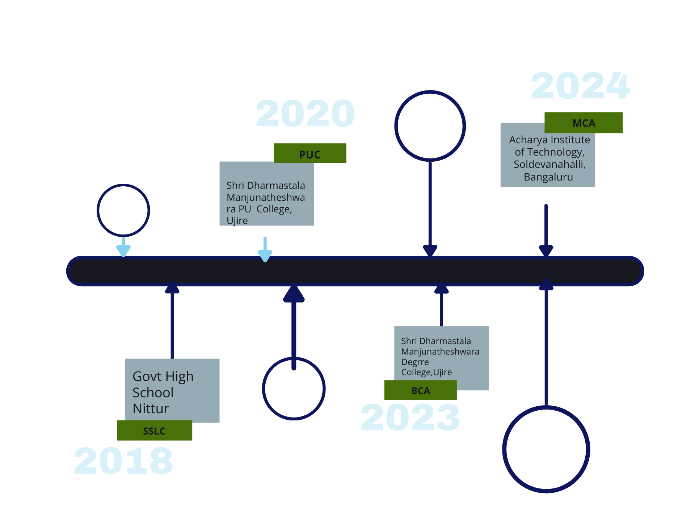

Hi, I am Mayura Varma Jain
and I am a passionate
About Me
As a passionate MCA student with a strong foundation in
web development, I have consistently demonstrated my ability to innovate and solve real-world
problems through technology. From building functional solutions to
spearheading impactful academic projects such as a Automated Job Hiring System
and participating in
Smart India Hackathon initiatives, I have proposed a mobile application to find
the undiscavered Heritage Place's
web application,
is backed by practical experience in event management and team leadership.I
thrive in
dynamic environments and am committed to leveraging my skills to deliver meaningful results for
organizations.
Education

Languages and technologies known
Work Experience
Portfolio
Automated Job Hiring System